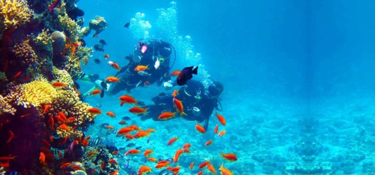

VIDA MARINA EN COLOMBIA
Los océanos son una de las principales reservas de biodiversidad en el mundo. Constituyen más del 90% del espacio habitable del planeta y contienen unas 250.000 especies conocidas y muchas más que aún quedan por descubrir, ya que todavía no se han identificado más de dos tercios de las especies marinas del mundo
Colombia es considerado como uno de los países con mayor biodiversidad marina en el mundo. Nuestra posición tropical, junto con el hecho de tener costas en los dos océanos, la alta heterogeneidad de sus fondos y la diversidad de ecosistemas y especies que poseemos, hacen que así como somos considerados un país megadiverso en el ambiente terrestre, también lo seamos en el ambiente marino. Sin embargo, no conocemos todo de nuestros mares. Relativamente hace poco tiempo hemos comenzado a explorarlos, además, el conocimiento que tenemos de ellos se restringe a porcentaje muy pequeño de nuestro mar territorial
SITIOS DE COLOMBIA PARA OBSERVAR LA VIDA MARINA
-
San Bernado
El archipiélago de San Bernardo es una de las joyas naturales y culturales de Colombia. Su zona de buceo es conocida por ser la parte más amplia de arrecifes del Parque Nacional Islas del Rosario y San Bernardo con 1.200 kilómetros cuadrados. Además de encontrar la pared de coral más extensa del Caribe colombiano, tendrá también espacio suficiente para aprender a bucear y disfrutar del silencio y la tranquilidad que solo el mar puede ofrecer.
-
Nuqui
La zona de buceo de Nuquí es de las más ricas en biodiversidad marina de Colombia y el mundo. Esto se debe a su cercanía con la selva y el encuentro de agua dulces y saladas en donde convergen toda clase de peces y corales exóticos.
-
Baru
La zona de buceo de Nuquí es de las más ricas en biodiversidad marina de Colombia y el mundo. Esto se debe a su cercanía con la selva y el encuentro de agua dulces y saladas en donde convergen toda clase de peces y corales exóticos.